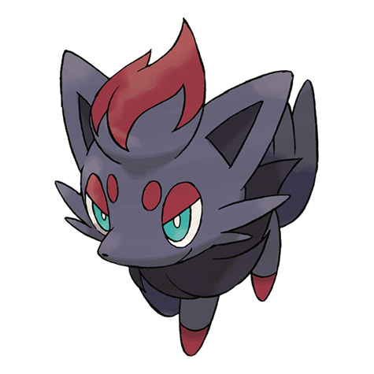
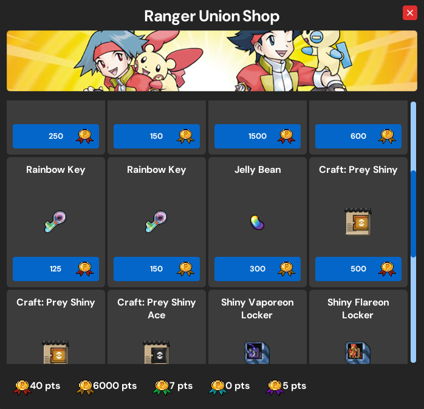
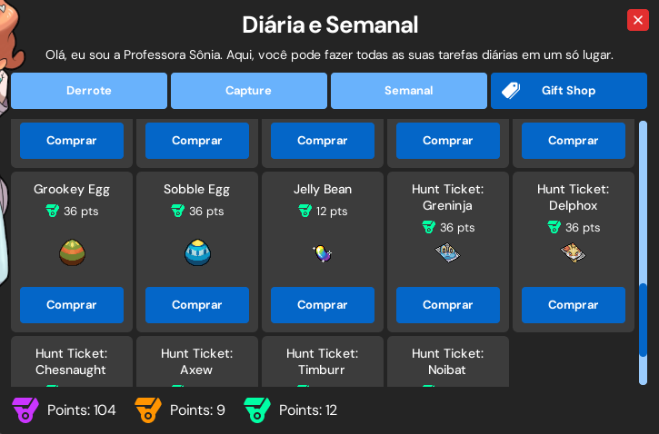
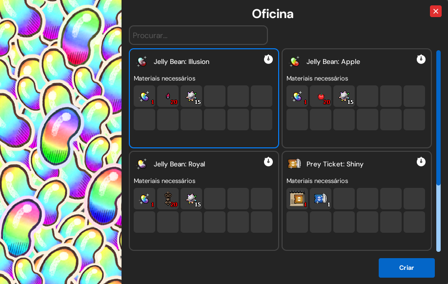
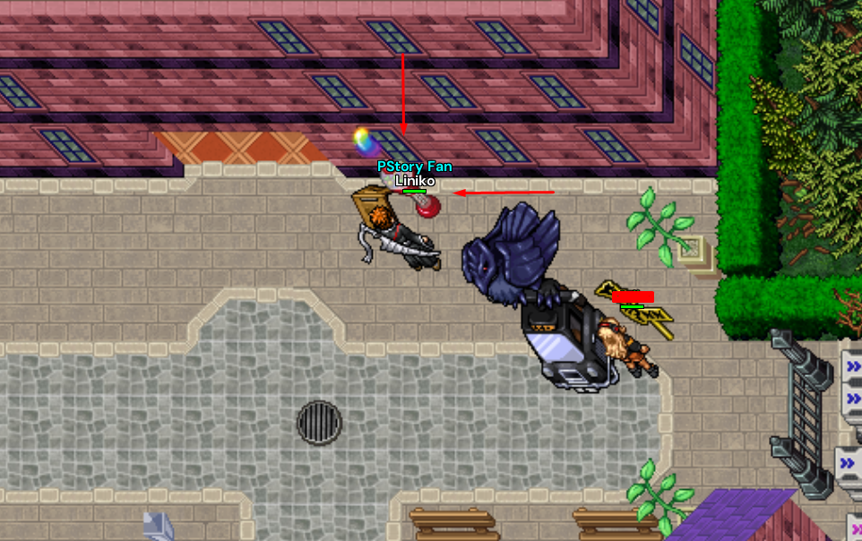
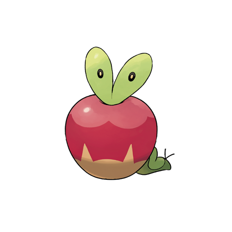
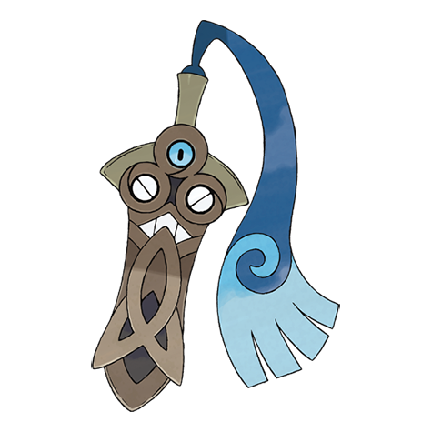

✦
Jelly Bean: Illusion
Ranger Boss Zoroark1 Jelly Bean + 20 Illusion Fur, 15 Ancient StoneDrop de Zorua

Há duas lojas onde você pode trocar seus pontos por Jellybeans.


Use 1 Jelly Bean base, 20 materiais do Pokémon indicado e 15 Ancient Stone.


1 Jelly Bean + 20 Illusion Fur, 15 Ancient StoneDrop de Zorua

1 Jelly Bean + 20 Apple Core, 15 Ancient StoneDrop de Applin

1 Jelly Bean + 20 Piece of Goldsteel, 15 Ancient StoneDrop de Honedge

Abra um card para conferir as recomendações e os detalhes da batalha.